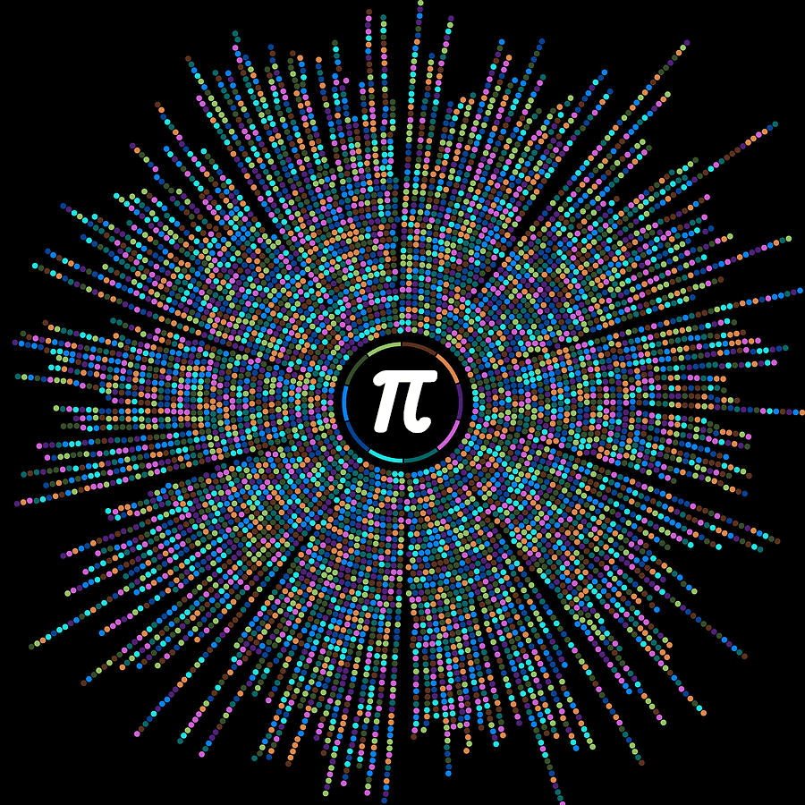

<!DOCTYPE html><html lang="en"></html><head><title>Онлайн курс ДМ</title><link rel="icon" href="img/pi-icon.png"/><meta charset="UTF-8"/><meta name="viewport" content="width=device-width, initial-scale=1, maximum-scale=1, user-scalable=no"/><link rel="stylesheet" href="https://use.fontawesome.com/releases/v5.8.1/css/all.css" integrity="sha384-50oBUHEmvpQ+1lW4y57PTFmhCaXp0ML5d60M1M7uH2+nqUivzIebhndOJK28anvf" crossorigin="anonymous"/><link rel="stylesheet" href="css/main.css"/></head><body><div class="main"><div class="wrapper-for-centering"><h2 class="title">Онлайн-курс<br> <b>Дискретная математика</b></h2><h5 class="title">от Санкт-Петербургского<br> Политехнического университета</h5><a href="https://github.com/Ruminat/DM-2019-online-course"><button class="btn btn-default" type="button"><span class="button-text"><i class="fab fa-github"></i> GitHub</span></button></a><a href="https://openedu.ru/"><button class="btn btn-default" type="button"><span class="button-text"><i class="fas fa-book-reader"></i> Открытое образование</span></button></a></div></div><div class="content"><div class="modules wrapper-for-centering"><div class="module-block"><h2 class="module-title"><i class="fas fa-cube"></i> Модуль I. Теория множеств</h2><div class="weeks"><div class="week-block"><h4 class="week-title"><i class="far fa-calendar-alt"></i> Неделя 1.<br><b>Множества, мультимножества, алгебра множеств</b></h4><div class="week-item"><a href="Docs/Practice/1-week/Практика.pdf"><button class="btn btn-default" type="button"><span class="button-text"><i class="far fa-file-pdf"></i> Практическое занятие</span></button></a></div><div class="week-item"><a href="Docs/Homeworks/1-week/ДЗ.pdf"><button class="btn btn-default" type="button"><span class="button-text"><i class="far fa-file-pdf"></i> Домашнее задание</span></button></a></div><div class="week-item"><a href="Docs/Homeworks/1-week/answers/Ответы.pdf"><button class="btn btn-default" type="button"><span class="button-text"><i class="far fa-file-pdf"></i> Ответы к ДЗ</span></button></a></div></div><div class="week-block"><h4 class="week-title"><i class="far fa-calendar-alt"></i> Неделя 2.<br><b>Отношения и функции (НЕ ЗАКОНЧЕНО)</b></h4><div class="week-item"><a href="Docs/Practice/2-week/Практика.pdf"><button class="btn btn-default" type="button"><span class="button-text"><i class="far fa-file-pdf"></i> Практическое занятие</span></button></a></div><div class="week-item"><a href="Docs/Homeworks/2-week/ДЗ.pdf"><button class="btn btn-default" type="button"><span class="button-text"><i class="far fa-file-pdf"></i> Домашнее задание</span></button></a></div><div class="week-item"><a href="Docs/Homeworks/2-week/answers/Ответы.pdf"><button class="btn btn-default" type="button"><span class="button-text"><i class="far fa-file-pdf"></i> Ответы к ДЗ</span></button></a></div></div></div></div></div></div></body>